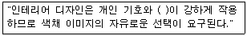
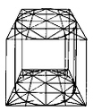
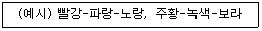

컴퓨터그래픽스운용기능사 (2004-07-18 기출문제)
1과목: 산업디자인 일반
1. 편집 디자인에 관한 설명 중 잘못된 것은?
- 소형 인쇄물을 시각적으로 구성
- 소비자의 상품구매를 위한 기능
- 시각 커뮤니케이션 표현에 중점
- 1920년대 미국에서 사용되기 시작
(정답률: 70%)

2. 다음 중 디자인 과정상 드로잉의 주요역할과 가장 거리가 먼 것은?
- 아이디어 전개
- 정밀표현
- 형태정리
- 프리젠테이션
(정답률: 49%)
3. 아무리 잘 그려진 포스터라도 보기 어렵고 내용 전달이 모호하다면 그 포스터는 무엇이 문제인가?
- 경제성
- 기능성
- 독창성
- 심미성
(정답률: 83%)
4. 다음 중 온화하고 유연한 동적인 표정을 가지는 것은?
- 수직면
- 수평면
- 곡면
- 사선
(정답률: 87%)
5. TV 광고 중 프로그램과 프로그램 중간에 삽입되는 광고는?
- 블록광고
- 스파트광고
- 프로그램광고
- 네트워크광고
(정답률: 56%)
6. 실제품과 거의 비슷하게 움직이거나 작동되는 모델은?
- 목크업
- 더미 모델
- 프리젠테이션 모델
- 프로토타입 모델
(정답률: 71%)
7. 다음 중 영상디자인 분야에 관계된 설명은 어느 것인가?
- 전문 직업으로서 제품디자인이 등장한 것은 1945년 이후이다.
- DM은 일반적으로는 구매시점광고라고 불리고 있다.
- 타이포그래피는 단순화된 그림에 의하여 대상의 성질이나 그 사용법을 표시하는 것이다.
- 홀로그램은 물체로부터 날아오는 빛의 파동을 레이저 장치를 이용하여 재생한 영상을 말한다.
(정답률: 81%)
8. 다음 설명 중 적합하지 않은 것은?
- 일반적으로 평면은 두 개의 수평선과 두 개의 수직선이 이루는 사각형을 의미한다.
- 입체물을 단순화하는 방법은 평면화 하는 것이다.
- 모든 면 중에서 가장 단순한 면은 곡면이다.
- 곡면은 단곡면(單曲面)과 복곡면(複曲面)으로 구별된다.
(정답률: 83%)
9. 디자인의 요소와 관련이 먼 것은?
- 질감
- 색
- 형
- 입체
(정답률: 68%)
10. CI(Corporate Identity)는 기업 이미지 통일화를 의미하는 계획적 경영 전략이다. 다음 중 CI의 기본 디자인 요소인 베이직 시스템(Basic System)과 관계가 먼 것은?
- 매체 광고
- 마크, 로고타입
- 기업 색상
- 전용 서체
(정답률: 76%)
11. 바우하우스 디자이너들이 가장 강조한 것은?
- 실용성
- 장식성
- 율동성
- 경제성
(정답률: 82%)
12. 다음 문장 속에 들어갈 가장 적절한 말은?

- 심미성
- 경제성
- 시간성
- 성별성
(정답률: 93%)
13. 제품의 수명주기(product life cycle)에서 "판매율의 둔화는 생산설비의 과잉, 이익의 축소를 가져와 경쟁적 우위를 확보한 경쟁사만 남게 된다. 대부분의 제품은 이 시기에 있다고 할 수 있다." 이 시기에 해당되는 것은?
- 도입기
- 성장기
- 성숙기
- 쇠퇴기
(정답률: 70%)
14. '마케팅 믹스'라고 하는 마케팅의 구성 요소인 '4P' 에 해당되지 않는 것은?
- 제품
- 가격
- 기업
- 유통
(정답률: 79%)
15. 다음 중 환경디자인과 거리가 먼 것은?
- 조경설계
- 도시계획
- 실내계획
- 제품설계
(정답률: 85%)
16. 다음 중 포장디자인의 기능으로 바르게 나열된 것은?
- 보호성, 편리성, 상품성
- 심미성, 기능성, 독창성
- 상징성, 통일성, 편리성
- 보호성, 기능성, 상징성
(정답률: 70%)
17. 실내디자인 프로세스의 과정 중에서 대상 공간에 대한 모든 계획을 도면화하여 실내디자인 프로젝트를 확정하는 단계는?
- 기획단계
- 설계단계
- 시공단계
- 평가단계
(정답률: 70%)
18. 다음 중 기하학적인 형태가 가장 기능적인 것이라며, 기능주의 철학을 대두 시켰으며, 네덜란드를 중심으로 일어난 운동은?
- 미래주의
- 기능주의
- 신조형주의
- 구성주의
(정답률: 50%)
19. 오즈번(Alex Osborn)에 의해 창안된 회의방식으로 디자인에서 널리 사용되고 있는 그룹형태의 아이디어 발상 방법은?
- 브레인 스토밍법
- 시스템 분석법
- 요소간 상관분석법
- 체크리스트법
(정답률: 93%)
20. 다음 중 평면 디자인의 원리에서 가시적인 시각 요소와 거리가 가장 먼 것은?
- 중량
- 형태
- 색채
- 질감
(정답률: 74%)
2과목: 색채 및 도법
21. 도면에서 실물보다 확대하여 그린 것은?
- 축척
- 현척
- 배척
- N.S
(정답률: 82%)
22. 다음 그림에서 보여 지는 가장 큰 효과는?
- 정의 잔상
- 도지 반전
- 리듬 효과
- 매스 효과
(정답률: 75%)
23. 색의 3속성을 3차원의 공간속에 계통적으로 배열한 것은?
- 가색 혼합(additive color mixture)
- 감색 혼합(subtractive color mixture)
- 중간 혼합(mean color mixture)
- 색입체(color solid)
(정답률: 65%)
24. 다음 그림과 가장 관련 있는 것은?

- 정투상도
- 사투상도
- 투시도
- 부등각 투상도
(정답률: 62%)
25. 제도에 쓰이는 문자의 크기는 무엇으로 나타내는가?
- 문자의 굵기
- 문자의 높이
- 문자의 기울기
- 문자의 나비
(정답률: 80%)
26. 우리들이 눈으로 물체를 보는 것과 같이, 원근법을 이용하여 물체의 형상을 하나의 화면에 그리는 도법은?
- 정투상법
- 사투상법
- 투시도법
- 등각투상법
(정답률: 54%)
27. 다음 색에 대한 설명 중 옳은 것은?
- 진한색, 연한색, 흐린색, 맑은색 등의 표현은 명도의 고저를 가리키는 것이다.
- 색입체에서 명도는 수치가 높을수록 저명도이다.
- 무채색은 색의 3속성을 모두 지닌다.
- 먼셀의 색표기는 HV/C로 한다.
(정답률: 81%)
28. 감광요인에 대한 설명 중 잘못된 것은?
- 황-청, 적-녹 등의 차이를 볼 수 있는 것은 추상체의 역할이다.
- 추상체와 한상체가 동시에 함께 활동하는 것을 박명시라고 한다.
- 닭은 추상체만 있어 야간에는 활동할 수가 없다.
- 색순응은 물체색을 오랫동안 보면 색의 지각이 강해지는 현상이다.
(정답률: 54%)
29. 신인상파 화가의 점묘화는 무슨 혼합인가?
- 회전 혼합
- 병치 혼합
- 가산 혼합
- 감산 혼합
(정답률: 87%)
30. 물감의 혼합방법과 관련 있는 것은?
- 가산혼합
- 감산혼합
- 중간혼합
- 병치혼합
(정답률: 67%)
31. 감법혼색에 대한 설명 중 틀린 것은?
- 순색에 회색을 섞으면 채도가 낮아진다.
- 검정을 쓰지 않고도 무채색을 만들 수 있다.
- 순색에 회색을 섞으면 명도는 변하지만 채도는 변화가 없다.
- 순색에 검정을 섞으면 명도와 채도가 낮아진다.
(정답률: 75%)
32. 다음 그림과 같이 각을 이등분할 때 가장 먼저 구해야 할 것은?
- AB
- ab
- cd
- OC
(정답률: 75%)
33. 영.헬름홀츠의 3원색설과 관련 있는 색은?
- 백, 흑, 순색
- 적, 녹, 청자
- 적, 황, 청자
- 황, 녹, 청자
(정답률: 70%)
34. 쉬브뢸의 색채조화론에서 12색상 중 다음과 같이 '예시'된 조건의 색 조화는?

- 반대색 3색의 조화
- 근접 보색 3색의 조화
- 주조색 3색의 조화
- 등간격 3색의 조화
(정답률: 49%)
35. 다음 배색 중 명시도가 가장 높은 것은?
- 흰색, 파랑
- 검정, 노랑
- 흰색, 녹색
- 검정, 녹색
(정답률: 82%)
36. 투상도의 제 3각법을 잘못 설명한 것은?
- 기준이 눈으로부터 눈, 화면, 물체의 순서로 되어있다.
- 미국에서= 발달하여 빠른 속도로 보급 되었다.
- 한국산업규격의 제도 통칙에 이를 적용하였다.
- 유럽에서 발달 독일을 거쳐 우리나라에 보급 되었다.
(정답률: 68%)
37. 다음은 투시도의 원리를 설명한 것이다. 옳은 것은?
- 시거리를 길게 하면 시야가 좁아진다.
- 시거리를 짧게 하면 대상은 시각적으로 작게 된다.
- 큰 것을 그릴 때에는 시거리를 짧게 잡아야 한다.
- 시야의 넓음은 시거리에 의해서 정해진다.
(정답률: 64%)
38. 주위에 있는 색의 영향으로 인접색에 가깝게 보이는 현상은?
- 색의 동화 현상
- 연변 대비 현상
- 보색 잔상 현상
- 등색 잔상 현상
(정답률: 75%)
39. 어두운 곳에서 빨간 불꽃을 돌리면 불꽃이 빨간 원으로 보이는데, 이는 어떤 현상 때문인가?
- 정의 잔상
- 부의 잔상
- 도지 반전
- 보색 잔상
(정답률: 75%)
40. 다음 중 가장 명도가 높은 느낌을 주는 것은?
- 가을 단풍, 낙엽
- 검푸른 바위, 녹슨 무쇠
- 흰 구름, 흰 솜, 흰 종이
- 푸른 벌판, 울창한 산림
(정답률: 72%)
3과목: 디자인 재료
41. 다음 중 표현기법상 치밀하고 정교한 사실 표현이 가능한 도구는?
- 에어브러시
- 매직 마커
- 아크릴 컬러
- 포스터 컬러
(정답률: 56%)
42. 화학펄프에 황산바륨과 제라친을 바른 것으로 종이표면에 감광제를 발라 인화지로 쓰이는 종이는?
- 황산지
- 바리타지(baryta paper)
- 인디아지(india paper)
- 글라이싱지(glassing paper)
(정답률: 51%)
43. 플라스틱 제품 중 가장 오랜 역사를 가진 것으로 일반적으로 베이클라이트(bakelite)라고도 하며 열경화성 수지를 대표하는 것은?
- 멜라민 수지
- 요소 수지
- 페놀 수지
- 푸란 수지
(정답률: 70%)
44. 춘재와 추재로 구성되어 나무의 무늬 결을 결정짓는 나무의 조직은?
- 수심
- 목질
- 나이테
- 수피
(정답률: 79%)
45. 다음 필름의 현상과정 중 가장 먼저 해야 할 것은?
- 정착
- 현상
- 세척
- 건조
(정답률: 57%)
46. 종이 제조 과정에서 충전제를 가하면 인쇄 종이는 어떤 점이 좋아지는가?
- 종이가 투명해 진다.
- 종이가 유연해 진다.
- 습기에 의한 신축이 커진다.
- 종이 면이 고르지 않게 된다.
(정답률: 63%)
47. 에나멜페인트에 관한 내용 중 틀린 것은?
- 오일니스와 안료가 주성분이다.
- 외부용 도료는 단유성 및 중유성 니스가 사용된다.
- 건축용, 차량, 선박, 기계 등에 널리 사용된다.
- 초벌칠용과 덧칠용이 있다.
(정답률: 46%)
48. 재료가 외력에 저항할 수 있는 능력을 나타내는 척도 중 전단강도에 대한 설명으로 적합한 것은?
- 부재와 직각되는 방향에 대한 힘에 저항하려는 것
- 재료가 잡아당기는 힘에 파괴될 경우의 하중을 단면적으로 나눈 값
- 재료가 누르는 힘에 의해 파괴될 경우의 하중을 단면적으로 나눈 값
- 물체가 외력에 대해 변형을 일으키지 않고 견디는 성질
(정답률: 43%)
4과목: 컴퓨터 그래픽스
49. 포토샵(Photoshop)에서 작성한 그림 File을 포토샵(Photoshop)에서 작성한 그림 File을 Quark Xperss 에서 불러 오려고 한다. 이 때 Photoshop File의 일반적인 저장방식으로 가장 적당한 것은?
- PICT, PCX
- Amiga IFF, BMP
- TIFF, EPS
- BMP, TIFF
(정답률: 61%)
50. 주기억 장치로 데이터를 읽고 쓰고 할 수 있는 메모리는?
- RAM
- ROM
- 가상메모리
- 플로피디스크
(정답률: 73%)
51. 다음 중 입력 장치에 해당되는 컴퓨터 그래픽시스템은?
- 모니터
- 프린터
- 스캐너
- 플로터
(정답률: 75%)
52. 픽셀로 이루어진 일반적인 사진이미지 합성작업에 사용되는 이미지 종류는?
- 벡터이미지
- 랜덤이미지
- 래스터이미지
- 오브젝트이미지
(정답률: 62%)
53. 탁상출판 혹은 전자출판이라고 일컫는 말의 약어는?
- DPI (Dot per inch)
- CAD (Computer Aided Design)
- DTP (Desk Top Publishing)
- PPI (Pixel per inch)
(정답률: 80%)
54. 컴퓨터 애니메이션 제작에 있어 영상에서 기본이 되는 단위는?
- 이미지(image)
- 프레임(frame)
- 픽셀(pixel)
- 카툰(cartoon)
(정답률: 83%)
55. 포토샵에서 작업 중에 일러스트레이터로 작업한 EPS 파일을 불러오려고 한다. 어떤 명령을 수행해야 가장 좋은가?
- New
- Copy
- Save
- Place
(정답률: 75%)
56. 일러스트레이터에서 두 오브젝트 간의 색채 및 모양의 단계적 변화를 위한 명령은?
- blend
- shear
- skew
- effects
(정답률: 71%)
57. 다음 중 3차원 프로그램에서 대상물의 표면에 사실감을 더하기 위해 재질감을 표현하는 방법은?
- Modeling
- Mapping
- lighting
- Morphing
(정답률: 75%)
58. 인터넷이나 모뎀과 같은 통신상에서 트루칼라 그래픽 이미지의 질을 최대한으로 유지하면서 효율적으로 파일을 압축하는데 사용되는 가장 좋은 포맷방식은?
- JPEG
- TIFF
- EPS
- PICT
(정답률: 68%)
59. 다음 중 크기를 변화시켜 출력해도 이미지 데이터의 해상도가 손상되지 않는 이미지는?
- Bit-Map Image
- Vector Image
- TIFF Image
- PICT Image
(정답률: 78%)
60. 도면작성에서 CAD프로그램을 사용함으로써 갖는 장점이 아닌 것은?
- 정밀한 도면 및 데이터 작성이 가능하다.
- 풍부한 아이디어가 제공된다.
- 규격화와 데이터 관리가 용이하다.
- 입력 및 수정이 편리하다.
(정답률: 84%)
편집 디자인은 소비자가 제품을 쉽게 이해하고 구매할 수 있도록 정보를 제공하는 기능을 가지고 있습니다. 따라서 "소비자의 상품구매를 위한 기능"은 올바른 설명입니다. 또한, 편집 디자인은 소형 인쇄물을 시각적으로 구성하고, 1920년대 미국에서 사용되기 시작한 것도 맞는 설명입니다.